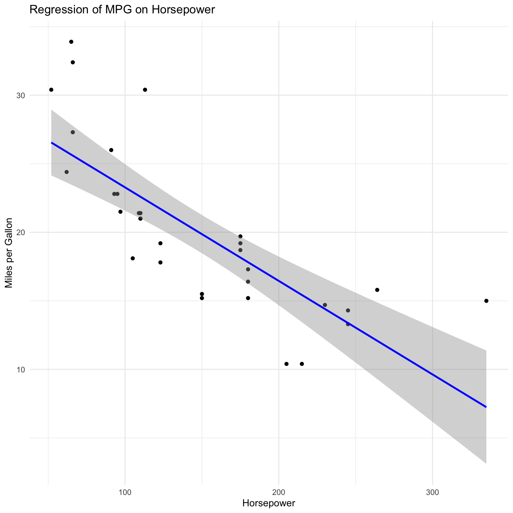
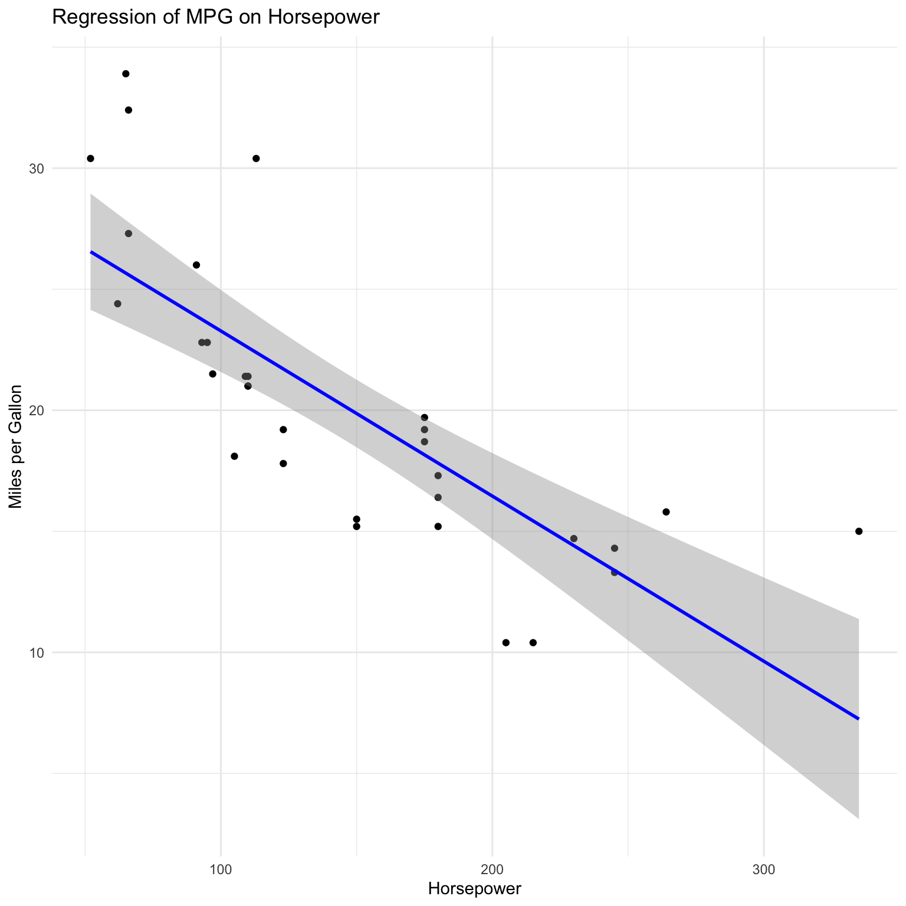
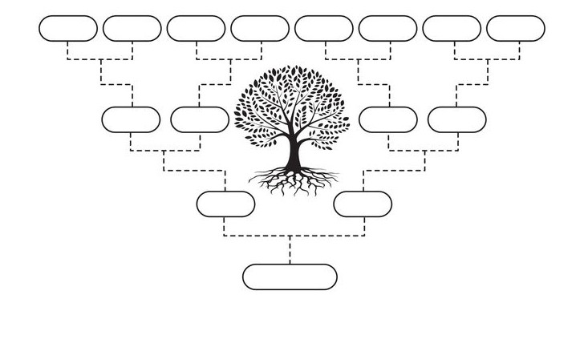
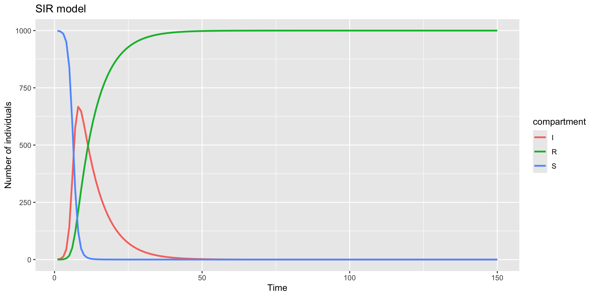

{kind=link}
{kind=link}

Depending on what we care about, we can classify diseases according to:
Pharmaceutical Interventions are medical interventions that target the pathogen or the host.
Examples:
Non-pharmaceutical interventions are measures that do not involve medical interventions.
Examples:
Discussion
For example, linear regression models:

Discussion
How are these two uses impacted by accuracy, transparency, and flexibility?
< Insert examples of models that have made accurate predictions of the future course of an outbreak >
< Insert examples of models that explain the spread and dynamics of infectious diseases >
< Insert examples of models that evaluate the impact of interventions and determine the next course of action >
Other compartments can be added to the model to account for important events or processes (e.g., exposed, recovered, vaccinated, etc.)
It is, however, important to keep the model simple, less computationally intensive, and interpretable.
The choice of model type depends on the research question, data availability, and computational resources.
In this introduction, we will focus on deterministic compartmental models with continuous time scales.
Mixing is homogeneous, i.e., individuals mix randomly and have an equal probability of coming into contact with any other individual in the population.
Transition rates are constant and do not change over time.
Individuals acquire “lifelong” immunity after recovery.
Continuous time compartmental models are often formulated using differential equations that describe the change in the number of individuals in each compartment over time.
The SIR model can be formulated by identifying the events/processes that cause individuals to move between compartments:
Let’s break these two processes down further.
Discussion
The transmission term is often defined through the force of infection (FOI), \(\lambda\):
The rate at which new infecteds are generated is given by \(\lambda S\), where \(S\) is the number of susceptible individuals.
The force of infection is proportional to the number of infected individuals and the transmission rate, \(\beta\).
\(\beta\) is the product of the contact rate and the probability of transmission per contact.
Note
Individuals recover after having been infected for the duration of infection.
The recovery rate, \(\gamma\), is the reciprocal of the average duration of the infection.
Infected individuals spend \(1/\gamma\) days in the infected compartment before recovering.
The average infectious period is often estimated from epidemiological data:
Putting it all together, the SIR model can be formulated as a set of differential equations:
\[\begin{align} \frac{dS}{dt} & = \color{orange}{-\beta \frac{S I}{N}} \\ \frac{dI}{dt} & = \color{orange}{\beta \frac{S I}{N}} - \color{blue}{\gamma I} \\ \frac{dR}{dt} & = \color{blue}{\gamma I} \end{align}\]
where \(\beta\) is the transmission rate, and \(\gamma\) is the recovery rate.
With initial conditions \(S(0) = N - 1\), \(I(0) = 1\), and \(R(0) = 0\).
where \(N\) is the total population size.
Compartmental models cannot be solved analytically.
Other methods are used to understand the dynamics of the model:
Here, we study the conditions under which an epidemic will grow or die out using the model equations.
Consider the case where \(I(0) = 1\) individual is introduced into a population of size \(N\) at time \(t = 0\).
That means in a completely susceptible population, we have \(S(0) = N - 1\) susceptible individuals.
At time 0, the disease will not spread if the rate of change of infections is negative, that is \(\dfrac{dI}{dt} < 0\).
Recall from the SIR model that \(\dfrac{dI}{dt} = \beta\dfrac{S I}{N} - \gamma I\)
Let’s solve this equation at \(t = 0\) by setting \(S = N - 1\) and \(I = 1\), assuming \(\dfrac{dI}{dt} < 0\).
\[\begin{equation*} \frac{dI}{dt} = \beta \times \frac{N - 1}{N} \times 1 - \gamma I < 0 \end{equation*}\]
\[\begin{equation*} \dfrac{\beta}{\gamma} \times \left( \frac{N - 1}{N} \right) < 1 \end{equation*}\]
For very large populations, \(\dfrac{N - 1}{N} \approx 1\), and the equation simplifies to \(\dfrac{\beta}{\gamma} < 1\).
This implies that the epidemic will not grow if \(\dfrac{\beta}{\gamma} < 1\).
This is the threshold condition for the epidemic to die out. The epidemic will grow if \(\dfrac{\beta}{\gamma} > 1\).
For the SIR model, the quantity \(\dfrac{\beta}{\gamma}\) is called the reproduction number, \(R0\) (pronounced “R naught” or “R zero”).
The basic reproduction number, \(R0\), is the average number of secondary infections generated by a single primary infection in a completely susceptible population.
The basic reproduction number is a key quantity in infectious disease epidemiology.
\[\begin{equation*} \begin{split} \text{Probability of infection given contact} \times \\ \text{Number of contacts per unit time} \times \\ \text{Duration of infectiousness} \end{split} \end{equation*}\]
and mathematically,
\[ R0 \propto \dfrac{\text{Infection}}{\text{Contact}} \times \dfrac{\text{Contact}}{\text{Time}} \times \dfrac{\text{Time}}{\text{Infection}} \]
The method used to derive \(R0\) in the SIR model is possible because it is easy to factor out \(I\) from the equations.
In more complex models, this appraoch becomes impossible to use.
A more general framework is the next-generation matrix approach (Diekmann, Heesterbeek, and Roberts 2010).
The next-generation matrix (NGM) approach focuses on how infections are generated.
It views the transmission process as a process where new infections are “born” from existing infections through generations.

Note
The disease-free equilibrium is the state where no infections are present. For an SEIR model, this is denoted as \((S, E, I, R) = (N, 0, 0, 0)\), where \(N\) is the total population size.
\[\begin{equation*} J = \begin{bmatrix} \dfrac{\partial f_1}{\partial x_1} & \dfrac{\partial f_1}{\partial x_2} & \cdots & \dfrac{\partial f_1}{\partial x_n} \\ \dfrac{\partial f_2}{\partial x_1} & \dfrac{\partial f_2}{\partial x_2} & \cdots & \dfrac{\partial f_2}{\partial x_n} \\ \vdots & \vdots & \ddots & \vdots \\ \dfrac{\partial f_n}{\partial x_1} & \dfrac{\partial f_n}{\partial x_2} & \cdots & \dfrac{\partial f_n}{\partial x_n} \end{bmatrix} \end{equation*}\]
where \(f_i\) is the \(i\)-th function of the vector-valued function and \(x_i\) is the \(i\)-th variable.
The linearised infected subsystem is then decomposed into two matrices \(\mathcal{T} + \Sigma\):
Next, solve \(-\mathcal{T}\Sigma^{-1}\)
Finally, determine the spectral radius, \(\rho\), of \(-\mathcal{T}\Sigma^{-1}\), which is the dominant eigenvalue of the NGM.
The dominant eigenvalue is the basic reproduction number, \(R0\).
\[\begin{equation*} \begin{split} \dfrac{dI}{dt} & = \beta SI - \gamma I \\ \dfrac{dS}{dt} & = -\beta SI \\ \dfrac{dR}{dt} & = \gamma I \end{split} \end{equation*}\]
\[\begin{equation*} \begin{split} \dfrac{dI}{dt} & = -\gamma I \\ \dfrac{dS}{dt} & = -\beta N I \\ \dfrac{dR}{dt} & = \gamma I \end{split} \end{equation*}\]
\[\begin{equation*} \mathcal{T} = \begin{bmatrix} 0 & -\beta N & 0 \\ 0 & 0 & 0 \\ 0 & 0 & 0 \end{bmatrix} \end{equation*}\]
\[\begin{equation*} \Sigma = \begin{bmatrix} -\gamma & 0 & 0 \\ 0 & 0 & 0 \\ 0 & 0 & \gamma \end{bmatrix} \end{equation*}\]
\[\begin{equation*} \rho = \dfrac{\beta N}{\gamma} \end{equation*}\]
\[\begin{equation*} \begin{split} \dfrac{dE}{dt} & = \beta SI - \sigma E \\ \dfrac{dI}{dt} & = \sigma E - \gamma I \\ \dfrac{dS}{dt} & = -\beta SI \\ \dfrac{dR}{dt} & = \gamma I \end{split} \end{equation*}\]
\[\begin{equation*} \begin{split} \dfrac{dE}{dt} & = -\sigma E \\ \dfrac{dI}{dt} & = -\gamma I \\ \dfrac{dS}{dt} & = -\beta N I \\ \dfrac{dR}{dt} & = \gamma I \end{split} \end{equation*}\]
\[\begin{equation*} \mathcal{T} = \begin{bmatrix} 0 & 0 & -\beta N & 0 \\ 0 & -\sigma & 0 & 0 \\ 0 & 0 & 0 & 0 \\ 0 & 0 & 0 & 0 \end{bmatrix} \end{equation*}\]
\[\begin{equation*} \Sigma = \begin{bmatrix} 0 & 0 & 0 & 0 \\ 0 & -\gamma & 0 & 0 \\ 0 & 0 & 0 & 0 \\ 0 & 0 & 0 & \gamma \end{bmatrix} \end{equation*}\]
\[\begin{equation*} \rho = \dfrac{\beta N}{\gamma} \end{equation*}\]
Numerical simulations can be performed with any programming language.
This course focuses on the R programming language:
deSolve package to solve the differential equations.Next, we will define the parameter values and initial conditions.
# define parameters we know
N <- 1
R0 <- 10
infectious_period <- 7
# Remember gamma <- 1/ infectious_period as discussed earlier
gamma <- 1/infectious_period
# We will use R0 = beta N / gamma instead because it is easier to interpret.
# beta is not directly interpretable.
params <- c(beta = R0 * gamma / N, gamma = gamma)
# Initial conditions for S, I, R
# Why is S = N - 1?
inits <- c(S = N - 0.001, I = 0.000001, R = 0)
# Time steps to return results
dt <- 1:70Finally, we will solve the model using the ode() function from the deSolve package. For now, we will use the default values of the function. You are encouraged to explore the documentation to understand the function better.
Now, let’s plot the results.
# Load the necessary libraries
library(dplyr)
library(tidyr)
library(ggplot2)
# Create data for ggplot2 by reshaping
results_long <- results |>
pivot_longer(
cols = c(2:4),
names_to = "compartment",
values_to = "value"
)
plot <- ggplot(
data = results_long,
aes(
x = time,
y = value,
color = compartment
)
) +
geom_line(linewidth = 1) +
labs(
title = "SIR model",
x = "Time",
y = "Number of individuals"
)
print(plot)
We can use the same approach as the SIR model to simulate the SEIR model.
Let’s do a code walk though in R.
Note
Note
Conceptually, vaccination works to reduce the number of susceptible individuals, \(S\).
The SIR and SEIR model can be extended to include vaccination by adding a new compartment, \(V\).
Let’s consider the SEIR model with vaccination.
The SEIRV model is simply the SEIR model with a vaccinated compartment, \(V\).
The vaccinated compartment represents previously susceptible individuals who have been vaccinated and are immune to the disease.
The vaccinated compartment is not infectious and does not move to the exposed or infectious compartments.
The vaccinated compartment is replenished by the rate of vaccination, \(\eta\).
The model diagram and equations are as follows:
\[\begin{align} \frac{dS}{dt} & = -\beta \frac{S I}{N} - \eta S \\ \frac{dE}{dt} & = \beta \frac{S I}{N} - \sigma E \\ \frac{dI}{dt} & = \sigma E - \gamma I \\ \frac{dR}{dt} & = \gamma I \\ \frac{dV}{dt} & = \eta S \end{align}\]
where \(\eta\) is the rate of vaccination.
Discussion
What are some of the assumptions of the SEIRV model?
What are the implications of these assumptions for the model’s predictions?
We can use the same approach as the SIR and SEIR models to simulate the SEIRV model.
Let’s do a code walk though in R.
Note
Conceptually, NPIs usually act to either reduce the transmission rate, \(\beta\) or prevent infected individuals from transmitting.
Let’s consider two scenarios that will extend the SIR model:
NPIs such as social distancing, mask-wearing, and hand hygiene can reduce the transmission rate, \(\beta\).
We can model this by introducing a reduction factor, \(\alpha\), that reduces transmission rate, \(\beta\).
The modified SIR model with a reduced transmission rate is as follows:
\[\begin{align} \frac{dS}{dt} & = -\alpha\beta \frac{S I}{N} \\ \frac{dI}{dt} & = \alpha \beta \frac{S I}{N} - \gamma I \\ \frac{dR}{dt} & = \gamma I \end{align}\]
where \(\alpha\) is the reduction factor, and \(0 \leq \alpha \leq 1\).
We can use the same approach as the SIR model to simulate the model with a reduced transmission rate.
Let’s do a code walk though in R.
Isolation is a key NPI that prevents infected individuals from transmitting the disease.
We can model this by introducing a new compartment, \(Q\), for quarantining infected individuals.
Infected individuals move to the quarantine compartment at a rate, \(\delta\).
Infected individuals in the quarantine compartment do not transmit the disease.
The modified SIR model with quarantine is as follows:
\[\begin{align} \frac{dS}{dt} & = -\beta \frac{S I}{N} \\ \frac{dI}{dt} & = \beta \frac{S I}{N} - \gamma I - \delta I \\ \frac{dR}{dt} & = \gamma I + \tau Q \\ \frac{dQ}{dt} & = \delta I - \tau Q \end{align}\]
where \(\delta\) is the rate at which infected individuals move to the quarantine compartment, and \(\tau\) is the rate at which individuals recover from quarantine.
We can use the same approach as the SIR model to simulate the model with quarantine.
Let’s do a code walk though in R.
The models we have discussed so far assume that all individuals in the population are identical.
However, in reality, individuals differ in their susceptibility to infection and their ability to transmit the disease.
It is essential to capture this heterogeneity in the models in order for the models to be more realistic and useful for decision-making.
This can be captured by incorporating heterogeneity into the models.
Heterogeneity is often captured by stratifying the population into different groups.
For many infectious diseases, the risk of infection and the severity of the disease vary by age.
Hence, it is essential to capture age structure in the models.
To do this, we divide the population into different age groups and model the disease dynamics within each age group.
Let’s extend the SIR model to include age structure.
We will divide the population into \(n\) age groups.
Because the homogeneous model has 3 compartments, the age structured one will have \(3n\) compartments: \(S_1, I_1, R_1, S_2, I_2, R_2, ..., S_n, I_n, R_n\).
\[\begin{align} \dfrac{dS_i}{dt} &= -\sum_{j=1}^{n} \beta_{ji} S_i I_j \\ \dfrac{dI_i}{dt} &= \sum_{j=1}^{n} \beta_{ji} S_i I_j - \gamma I_i \\ \dfrac{dR_i}{dt} &= \gamma I_i \end{align}\]
The model can be used to study the impact of age structure on the dynamics of the epidemic.
For example, we can study the impact of vaccinating different age groups on the dynamics of the epidemic.
Other forms of heterogeneity that can be incorporated into the models include:
In the last two days, we have covered a lot of ground. Here are some key takeaways:
Infectious diseases are a major public health concern that can have devastating consequences.
Mathematical models are essential tools for studying the dynamics of infectious diseases and informing public health decision-making.
Models are simplifications of reality that help us understand complex systems.
We have discussed several compartmental models, including the SIR, SEIR, and SEIRV models.
The SIR model is a simple compartmental model that divides the population into three compartments: susceptible, infected, and recovered.
The SEIR model extends the SIR model by adding an exposed compartment.
We can model various pharmaceutical and non-pharmaceutical interventions (NPIs) by modifying the transmission rate or adding new compartments.
We have discussed the basic reproduction number, \(R0\), which is a key parameter in infectious disease epidemiology.
\(R0\) is the average number of secondary infections produced by a single infected individual in a completely susceptible population.
If \(R0 > 1\), the disease will spread in the population; if \(R0 < 1\), the disease will die out.
Deriving the basic reproduction number, \(R0\), is an essential step in understanding the dynamics of infectious diseases.
Deriving \(R0\) for the simple SIR model is simple as we just need to study the threshold phenomena.
For more complex models, we can use the next-generation matrix approach to derive \(R0\).
Often, homogeneous models are not sufficient to capture the complexity of infectious diseases.
Incorporating heterogeneity into the models is essential for capturing the complexity of infectious diseases.
Age structure is a common form of heterogeneity that can be incorporated into the models.
Other forms of heterogeneity include spatial, temporal, and contact heterogeneity.
{kind=link}
{kind=link}
{kind=link}
{kind=link}
{kind=link}